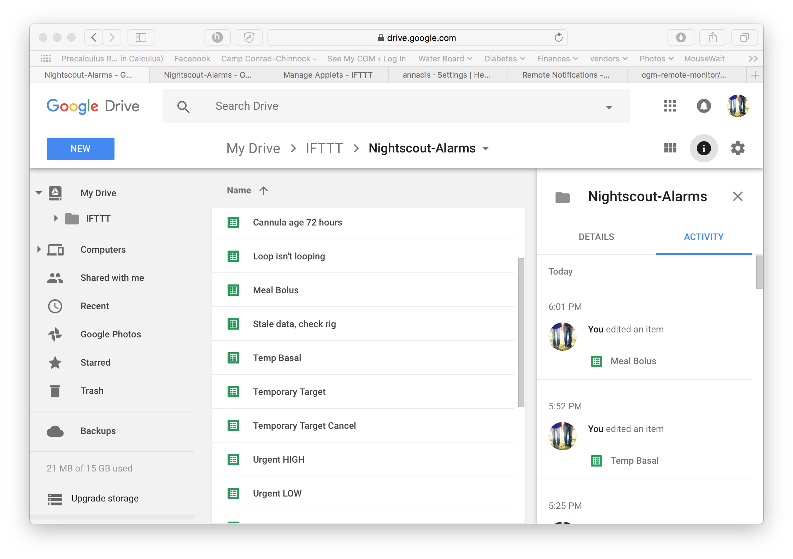

Remote notifications
While Loop app currently sends notifications locally on Loop user’s iPhone, parents and caregivers likely want those messages on their phones, too. We can achieve this functionality through a combination of Nightscout, IFTTT, Google, and Pushover.
Traditionally, most people may already know of Pushover alerts through their NS site. The old Loop docs had set up for how to add your PUSHOVER_ANNOUNCEMENT_KEY , PUSHOVER_API_TOKEN, and PUSHOVER_USER_KEY in your Heroku settings to get notifications on the non-looping phones of parents and caregivers. The drawback for that method is that you could not necessarily fine-tune the alerts (maybe you wanted battery alarms on your NS website, but not get pushovers for them…a bit hard to separate out the environments that way) and Pushover had a demanding acknowledgment requirement. If you failed to acknowledge an alert, you may end up getting alarm fatigue fairly quickly as the alarm repeated itself.
Using Pushover THROUGH IFTTT however, we can improve the possible notifications and who receives which ones. For example, a teenage Looper may want notifications when his/her pump site needs changing and when his/her Dexcom is about to expire in the next day. S/he already gets local notifications on his/her phone via Loop for low reservoir volumes, low pump battery, and Loop failures. Dexcom app provides high/low BG notifications locally, too. If s/he were to get those same alarms via Pushover, s/he would inevitably get alarm fatigue. A remotely-monitoring parent may want additional information, like a pushover alert when the school nurse boluses for lunch, as well as Loop failures, low iPhone battery level for the child, low pump battery, and other such information that might be useful. Perhaps there’s also an emergency contact person that you only want to get high/low BG alerts…you can set that up as well quite easily.
The basic concept is that NS puts out an event that triggers the IFTTT service called Webhooks (old name was “Maker Webhooks” hence you may see references to “maker” in NS docs). Actually, there are several types of events that NS has programmed in all ready to use in IFTTT.

For this setup, we are going to use the most general logging event called ns-event. You’ll get all the alarms and notifications logged, and then you can decide in subsequent steps which ones you’d actually like to send to your phone for pushover notification.
As a brief roadmap for what we are going to do:
Get necessary accounts setup
Add a folder to your Google Drive
Make an IFTTT applet to log NS events to your Google Spreadsheets
Enable NS to work with that new IFTTT applet
Make an IFTTT applet to send Pushover alert when the Google Spreadsheet is updated
Get Prepped
If you don’t already have these steps done, you will need them. Skip any that you already have done.
Setup a Nightscout site
Get an IFTTT account
Get a Pushover Account
Get a Google Account
Download the Pushover app onto your phone, and any other phone you’d like to receive Pushover alerts
Download the IFTTT app onto your phone, and any other phone you’d like to use IFTTT applets on
Login to the Pushover and IFTTT apps with your login information
Add a Google Drive folder
Login to your Google account and select Google Drive
{kind=link}
Click on the blue “New” button and create a new folder named IFTTT.

Double click on the newly created IFTTT folder, select the blue “New” button again, and create a new subfolder called “Nightscout-Alarms”
{kind=link}
This IFTTT/Nightscout-Alarms folder will eventually contain numerous Google Spreadsheets, one for each NS alarm or information that is logged. As new alarms are triggered, the IFTTT applet we are about to write will add a row to the appropriate spreadsheet logging the time of the alarm and any other reported details that go with the entry. For now though, your drive will be blank…screenshot below just to give you an idea of where we are going.
{kind=link}
Make 1st IFTTT Applet to Log NS Alarms
Login to your IFTTT.com account and select the “New Applet” button.

In the screen that appears, click on the blue “+this” part of the screen
{kind=link}
In the next screen, type “webhooks” in the search field and then click on the blue connect button
{kind=link}
If this is the first time you are using IFTTT Webhooks service, you will have a “Connect” button to select. If you already have IFTTT applets using Webhooks, you won’t see this screen…just move to the next bullet.

Click on the “receive a web request” blue box, and then fill in the Event Name as
ns-eventand then press the “Create trigger” button. (Side note: the event name used here corresponds to the triggers discussed above for core events that NS already has integrated for IFTTT users. If you want to, instead, use the other triggers such as ns-warn or ns-urgent, you can. This example is using the most general trigger so that the options are wider for most users.)
{kind=link}
Click on the blue “+that” text
{kind=link}
Enter
googlein the search field and click on the Google Sheets icon
{kind=link}
Select the green “Add row to spreadsheet” box
{kind=link}
Delete the contents of the “Spreadsheet Name” and “Drive folder path”. For the “Spreadsheet Name”, click the “Add Ingredient” button and select the “Value1”. For the “Drive folder path”, enter
IFTTT/Nightscout-Alarms. You do not have to modify the “Formatted row” box’s contents. Click the “Create action” button at the bottom.
{kind=link}
Turn off the toggle for receiving notifications when the applet runs, and then click the Finish button

You’ll now have the finished IFTTT applet that will cause a row to be added to a Google spreadsheet…tracking all your NS notifications and alarms. If it is the first time that alarm has been logged, the applet will also create the spreadsheet itself. After a while, your IFTTT/Nightscout-Alarms folder will start to look like the screenshot posted above with numerous spreadsheets for each alarm type.
{kind=link}
Enable IFTTT Webhooks in your Nightscout site
Note
If you already have created IFTTT buttons previously to work with your NS site, you can skip this section. If those buttons are working, then you’ve already added your MAKER_KEY and “maker” to your ENABLE line in Heroku.
To actually make that first applet work, we need to enter a “Maker Key” to get NS and IFTTT talking to each other. Find your Maker Key by going to your IFTTT account, Services and then clicking on Webhooks. (Your screen may not have as many services showing; the example account below just happens to already use several services.)


You will see your Maker Key as the last part of the URL; copy that last part (the red circled part)

Navigate to your Heroku account’s settings tab, “reveal config vars” and (1) add your Maker Key to the MAKER_KEY line and (2) add “maker” to your ENABLE line.
{kind=link}

Make 2nd IFTTT Applet to send Pushover notifications
In your IFTTT account, select the “New Applet” button.
{kind=link}
In the screen that appears, click on the blue “+this” part of the screen
In the next screen, type “google” in the search field and then click on the “Google Sheets” logo.
Click on the “New row added to spreadsheet” as the trigger.
{kind=link}
Enter the following information: Folder path is
IFTTT/Nightscout-Alarmsand for the filename you are going to enter the name of the particular NS alarm or information that you would like to get pushover alerts for. Click on the “Create trigger” button to save the trigger.
{kind=link}
Note
This applet can’t be created unless your filename (alarm spreadsheet) already exists. If your 1st applet we created above hasn’t run for a long time, the spreadsheets may not exist yet because the alarms haven’t triggered. You have two options…(1) manually create the file in your Google Drive so that you can finish the applet now or (2) wait several days/weeks for the alarms to happen and that will automatically create the files in your Google drive. If you choose option 1, here’s a partial list of some of the filenames you could create in advance:
* Loop isn't looping
* Cannula age 48 hours
* Cannula age 72 hours
* Meal Bolus
* Warning, Pump Reservoir Low
* Warning Uploader Battery is Low
* Temporary Override
Depending on your alert levels you specified in NS, some of the hours in the titles may vary to match your settings
Click on the blue “+that” text
Enter
pushoverin the search field and click on the Pushover icon. If this is your first time linking your IFTTT to Pushover, you will be prompted to enter your Pushover account login and allow IFTTT access. This only needs to be done once.

Select the “Send a Pushover notification” box
{kind=link}
Delete the contents of the “Title” and “Message” and “URL” boxes. For the Title, click the “Add Ingredient” button and add
ColumnC. For the “Message”, click the “Add Ingredient” button and add the values of various columns from your spreadsheet for the information you would like to include. For the alerts:ColumnCcontains the alarm name,ColumnAis the date/time of the alarm, andColumnDhas more detailed information about the info/alarm. This is a pretty decent recipe to follow to get the useful information in your notification.

Select the “Message Priority” that you would like for this particular alarm type.

Select the “Device” that you would like to receive this particular alarm type. The devices listed will be all your devices that have Pushover app installed and logged into. Click “Create Action” when you are finished.

You’ll now have made the IFTTT applet that will cause a Pushover notification to a particular device for a particular NS alarm, once the first applet records the alarm in the google spreadsheet. Keep the “receive notification when this Applet runs” toggled off and click the Finish button.

Revisit Nightscout Alert Levels
Putting all these notifications together may cause you to want to revisit the alert levels you have set in your Heroku settings. Here’s a short summary of NS for the looping-related alerts (Note: the last row, Upbat, is the Looping iPhone battery level for Loop users; or the rig’s battery level for OpenAPS users.) If you’d like some of these alarms for your site and don’t currently have them activated (they are all off by default unless specifically turned on), the lines you’d need to add are in the last column. If you like the default values of the WARN and/or URGENT, you don’t have to add those extra lines…just the line to enable the alerts will be sufficient.
| SETTING | DEFAULTWARN | DEFAULTURGENT | HEROKUSETTINGS |
|---|---|---|---|
| CAGE | 48 | 72 | CAGE_ENABLE_ALERTS = trueCAGE_WARN=XXCAGE_URGENT=XX |
| SAGE | 164 | 168 | SAGE_ENABLE_ALERTS = trueSAGE_WARN=XXSAGE_URGENT=XX |
| IAGE | 48 | 72 | IAGE_ENABLE_ALERTS = trueIAGE_WARN=XXIAGE_URGENT=XX |
| LOOP | 30 | 60 | LOOP_ENABLE_ALERTS = trueLOOP_WARN=XXLOOP_URGENT=XX |
| OPENAPS | 30 | 60 | OPENAPS_ENABLE_ALERTS = trueOPENAPS_WARN=XXOPENAPS_URGENT=XX |
| PUMP_CLOCK | 30 | 60 | PUMP_ENABLE_ALERTS = truePUMP_WARN_CLOCK=XXPUMP_URGENT_CLOCK=XX |
| PUMP_RES | 10 | 5 | PUMP_ENABLE_ALERTS = truePUMP_WARN_RES=XXPUMP_URGENT_RES=XX |
| PUMP_BATT_P | 30 | 20 | PUMP_ENABLE_ALERTS = truePUMP_WARN_BATT_P=XXPUMP_URGENT_BATT_P=XX |
| PUMP_BATT_V | 1.35 | 1.30 | PUMP_ENABLE_ALERTS = truePUMP_WARN_BATT_V=XXPUMP_URGENT_BATT_V=XX |
| UPBAT | 30 | 20 | UPBAT_ENABLE_ALERTS = trueUPBAT_WARN=XXUPBAT_URGENT=XX |
Final notes
You can use other notification services than Pushover in the last part of the second applet. For example, you could use the SMS service to send text notifications to your iPhone instead of Pushover. The downside for that is that the SMS service is limited to 100 message each month…some users may exceed that pretty easily. Another alternative notification would be IFTTT’s own Notification service. This would work well, but does not have the ability to distinguish between devices the way Pushover allows. If you use IFTTT’s Notifications service, every phone using your IFTTT account will get the notices.
To be clear, you do NOT need to have pushover on your ENABLE line nor have
PUSHOVER_USER_KEY,PUSHOVER_API_TOKEN, orPUSHOVER_ANNOUNCEMENT_KEYentered into your Heroku settings in order for any of the above to work. This is not the same Pushover as NS has integrated into its code. This is actually through IFTTT services, you just need a Pushover account to link to during the 2nd applet setup.To create more notifications, simply repeat the steps for the 2nd applet you created, only this time use a new filename that corresponds to the spreadsheet tracking the alert you’d like notifications for. You’ll end up with multiple applets of the dark blue type (the pushover notifiers) and only a single light blue (NS alarm general collector).

Here are examples of the Meal Bolus and Temp Basal ns-event logging spreadsheets


The 1st applet can only create up to 2000 active rows in a given spreadsheet. After that, the applet will automatically create a new spreadsheet. For most alarms, it may take quite some time to reach 2000 rows of info. For other alerts, such as temp basals being set, that may fill up rather fast for the average looper. You can either clean out the data rows periodically to make room, or update your filename in the 2nd applet periodically when a new spreadsheet is made.